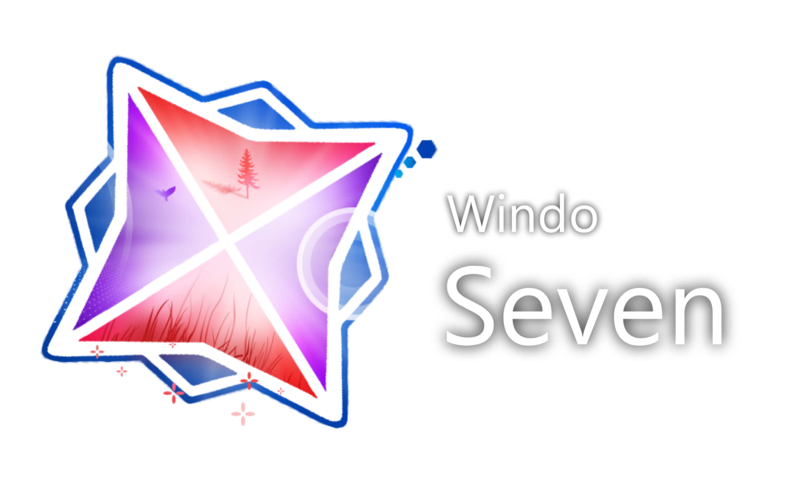

Seven is an album made for itzWindo's (formerly WindowsGod2)'s 7th anniversary since he started publishing music on YouTube. This album takes twenty tracks from his history across multiple aliases and reimagines them in a new style. Every track is crafted with love and appreciation for his fans.
This is dedicated to everyone who has stuck around & supported Windo for as long as they have. Here's to [SEVEN] years.